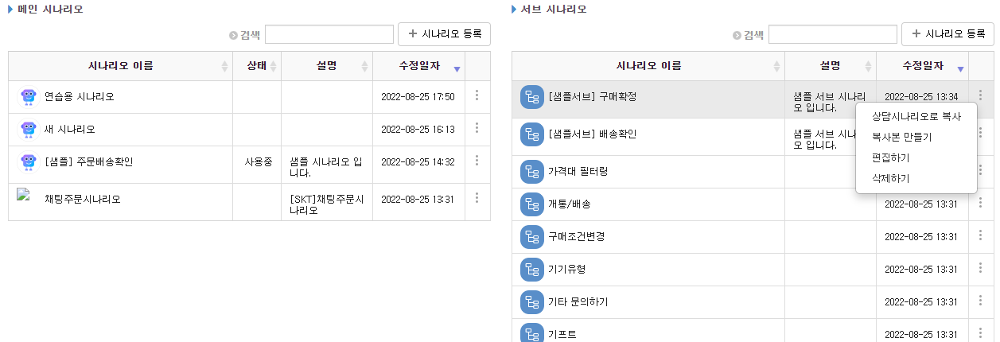

datatable lib 적용 (2020)
2022, Aug 26
jquery datatable
ℹ️ 1.10.20버전 기준
요구사항
%2061bd869db5f74aa787e478c7cf52281a/Untitled.png)

- 2개의 테이블로 구분
- 각 row에 dropdown 제공
- 리스트 검색
- 컬럼별 정렬 제공
개발
- 라이브러리를 검색하다가 datatable 발견해서 간단하게 청사진(?)을 그려본 담에 내부 검토를 거쳐서 적용하게 되었습니다.
- 적용하면서 라이브러리에 대해 정리한 것들입니다.
1. datatable생성되고 로드되고 콜백 정의
datatable({
stateLoadCallback: function(settings) {
return true; // 리턴 반드시 정의(리턴 빠지면 생성안됨)
}
})
2. row항목별 클릭이벤트 정의
datatable({
fnRowCallback: function( nRow, aData, iDisplayIndex, iDisplayIndexFull ) {
$('td > i', nRow).on('click', function() {
// if you have the property "data" in your columns, access via aData.property_name
// if not, access data array from parameter aData, aData[0] = data for field 0, and so on...*
var btnAction = $(this).data('toggle');
if (btnAction === 'dropdown'){
// $(this).trigger('click');
$(this).closest('div').find('.subMenu').addClass('open');
} else if (btnAction === 'appdetail'){
// do something......
}
});
}})
3. row별로 속성주기
var aaa = new Datatable();
aaa.rows().every( function () {
this.child( this.index() );
} );
4. class속성 변경
$.extend( $.fn.dataTableExt.oStdClasses, {
"sFilterInput": "form-control" // 필터영역에 className 정의
});
5. row 빼기
$.fn.dataTable.ext.search.push(
function(settings, data, dataIndex) {
alert(data[1] == " ");
return data[1] == " ";
}
);
aaa.draw();
6. row빼기 - 2
// (3)으로 child주고 하고 나서
var bb = $('#listViewTableY tbody');
var child = aaa.row( bb ).child;
if ( child.isShown() ) {
child.hide();
}
else {
child.show();
}
7. 테이블 그려질 때 디폴트로 특정 컬럼으로 sorting되게
order: [[3, 'desc']], // 4번째 컬럼으로 descending되게 한다.
datatables가 생성되었는지 체크하는 방법
if (table instanceof $.fn.dataTable.Api) { // datatable ... do datatable stuff } else { // not a datatable... do other stuff }OR
*$*.**fn**.dataTable.isDataTable(**'#listViewTableMain'**)
8. get row data
columnDefs : [{targets:0, width:'33%'}, {targets:1, width:'10%'}, {targets:2, width:'27%'}, {targets:3, width:'15%'}, {targets:4, width:'14%', sortable: false}, {targets:[5, 6], width:'1%', visible: false}],
columns: [
{ "data": "scenarioName" },
{ "data": "status" },
{ "data": "description" },
{ "data": "updatedDate" },
{ "data": "applyBtn" },
{ "data": "scenarioId" },
{ "data": "isMain" }
],
alert(loadedDatatable.rows( { selected: true } ).data()[0].scenarioId);
<th class="hide"></th>
<th class="hide"></th>
<td class="hide"></td>
<td class="hide"></td>
기타. 로딩이 느려서 테스트해 본 옵션들
- fixedHeader : true로 하면 헤더는 고정되지만 약간 느린것 같음
- stateSave : true로 하면 마지막 정렬조건이라든지 마지막 설정을 저장해서 가져오고 있어서 좋지만, 느린것 같음
- columnDefs: 컬럼별로 설정이 많을 수록 느림
- responsive: true로 하면 느림